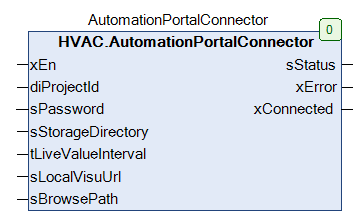
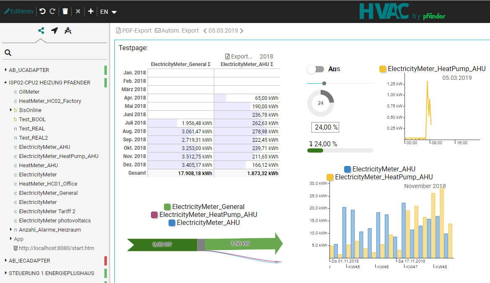
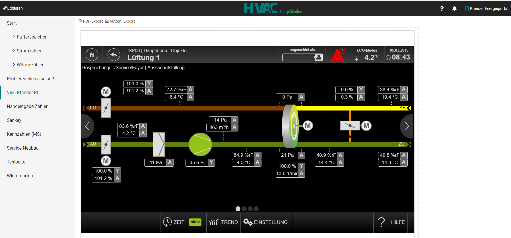
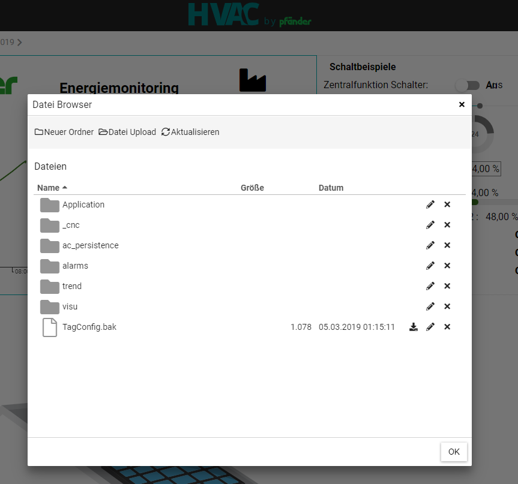

AutomationPortalConnector (FB)¶
FUNCTION_BLOCK AutomationPortalConnector
Kurzbeschreibung¶
Verbindet die Steuerung mit der HVAC Automation Portal. Weitere infos unter www.hvac-automation.comErmöglicht das Übertragen von Variablen übder die CODESYS Symbolkonfiguration.Im Portal könenn diese dann aufgezeichnet und ausgewertet werden.Außerdem können Alarme weitergeleitet werden, auf die CODESYS Visu zugegriffen werden und auf das Geräteverzeichnis zugegriffen werden.In der HVAC RB300 Bibliothek kann speziell für die Steuerung RB300 ein Funktionsbaustein für das herstellen einer VPN Verbindung vom Portal zur Steuerung platziert werden.
Darstellung¶

Funktionsbeschreibung¶
Zum verbinden bitte folgende Punkte durchlaufen:
Variablen übertragen:¶
1. https://portal.hvac-automation.com besuchen und kostenlos registrieren2. Erzeugte Projekt ID an den Eingang diProjectId anhängen. xEn auf TRUE setzen.3. Passwort am Eingang sPassword vergeben4. Rechtsklick auf “Application” und “Symbolkonfiguration” erstellen. Dort die Variablen anhaken die an das Portal übertragen werden sollen.5. Download der Application auf die Steuerung6. Im HVAC Automation Portal erscheint die Steuerung nun Orange, das selbst erstelle Passwort muss hier eingetragen werden. Fertig.
Visualisieurng übertragen:¶
Zum Übertragen der Visualisieurng müssen Sie am Eingang sLocalVisuUrl die zu übertragende Visualisierung eintragen. Soll die lokale CODESYS Visualisierung übertragen werden so reicht es aus ‘http://127.0.0.1‘ oder ‘http://127.0.0.1:8080/webvisu.htm‘ einzutragen. Im HVAC Automaion Portal kann die Visualiserung dann wie eine Variable paltziert und verwendet werden.

Geräteverzeichnis übertragen:¶
Es kann über das HVAC Automation Portal auf die Ordnerstruktur des Gerätes zugegriffen werden um z.B. Dateien aus der Ferne zu sichern. Dazu muss am Eingang sBrowsePath entwender ‘/’ für das komplette root Verzeichnis oder ‘./’ für das CODESYS PLC Verzeichnis eingetragen werden.

- InOut:
Scope Name Type Initial Comment Input xEn BOOL diProjectId DINT -1 Project ID generated by hvac-automation portal: Open the project settings at the top right of the hvac-automation Portal sPassword STRING Password for secure Adapter communication: The password must be entered in hvac-automation Portal once the connection has been established sStorageDirectory STRING Optional - Speficy directory path, where to store configuration backup and logged value data. Use empty string for default directory tLiveValueInterval TIME TIME#1s0ms Optional - Specify higher interval to reduce networking load (Minimum: T#1s) sLocalVisuUrl STRING(200) ‘http://127.0.0.1‘ Optional - Specify URL(s) for pass-through to the server, to display local websites in hvac-automation Portal (e.g. http://localhost/visu). Multiple URLs can be separated with a semicolon. Limitations: No https support sBrowsePath STRING Optional - Specify path for reading and writing files from hvac-automation (e.g. ‘/’ for root directory or ‘./’ for CODESYS home directory). Leave empty to disable this functionality Output sStatus STRING(255) Description of current status/error xError BOOL TRUE if adapter is not working correctly (see Status output for details) xConnected BOOL TRUE if connection to hvac-automation portal is established